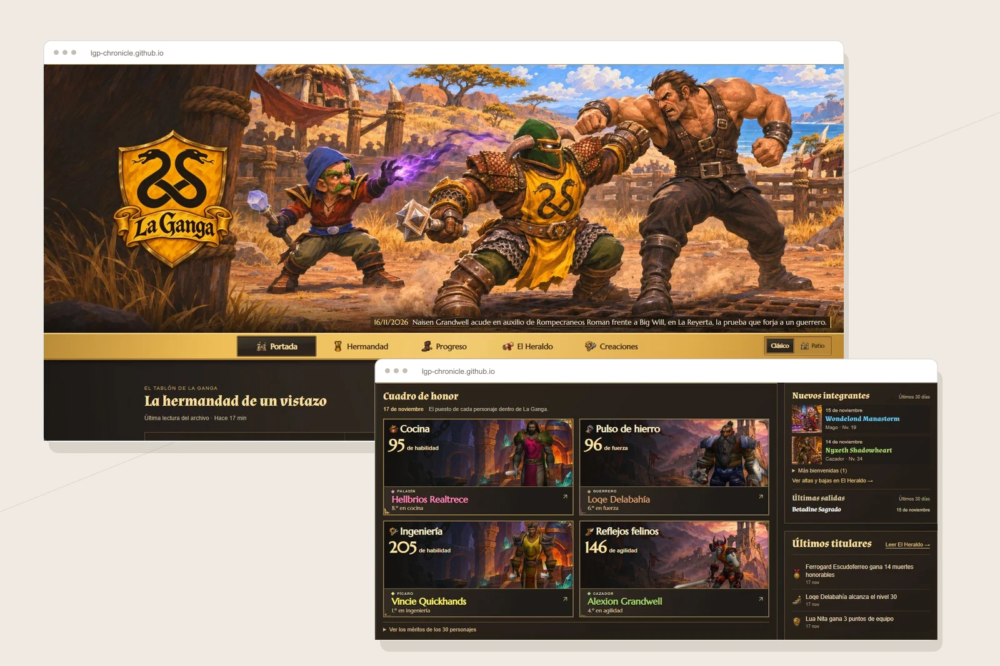
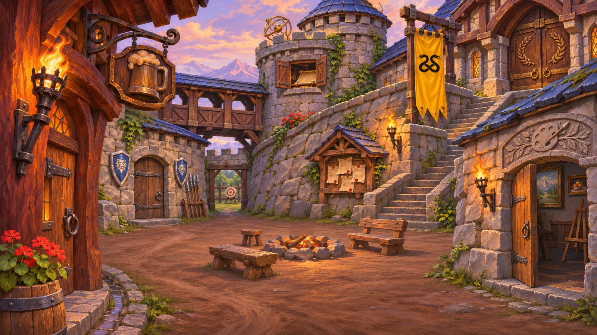

Give the community a shared home
Character profiles, equipment, comparisons and progression sit alongside a guild newspaper, chronicles and an illustration gallery. The structure makes room for both useful information and the stories behind it.
Guild Chronicle
A community platform for La Ganga, my World of Warcraft guild. Character progression, shared stories and an interactive courtyard turn a collection of guild data into a place people can explore.

Step inside, discover the landmarks and choose where to go. The live experience loads only when you press play.

The challenge was to bring two needs together: finding guild information quickly and expressing the personality of a community. La Ganga offers a conventional dashboard alongside a more immersive entrance.
Character profiles, equipment, comparisons and progression sit alongside a guild newspaper, chronicles and an illustration gallery. The structure makes room for both useful information and the stories behind it.
El Patio translates navigation into an illustrated space: the barracks lead to the roster, the noticeboard to the newspaper, and the training target to comparisons. Recognisable landmarks invite exploration while the classic view remains available for direct access.
Opening gates, layered animation, firelight and sound give the courtyard its atmosphere. Keyboard focus, touch navigation, reduced-motion support and audio controls keep that atmosphere from becoming a barrier. The heavier scene loads separately from the main dashboard.
I used Claude and ChatGPT as my main AI collaborators throughout the project. My role was to define the experience, direct its visual identity and refine how the pieces work together. The result is a working website that brings product thinking, visual storytelling and implementation into one project.
React, TypeScript and Vite power the main site. Scheduled GitHub Actions bring Blizzard and Warcraft Logs data into static snapshots, served through GitHub Pages.
El Patio combines illustrated layers, canvas animation and browser audio. A standalone scene keeps its richer media separate from the everyday dashboard.
Scheduled snapshots favour simple hosting over real-time updates. Two ways to navigate balance expressive storytelling with quick access to information.